Vision and Learning Group
Home
People
Research
Publications
Teaching
Contact Us
Home
People
Research
Publications
Teaching
Contact Us
menu
Publications
Conference
Journal
Books
2021
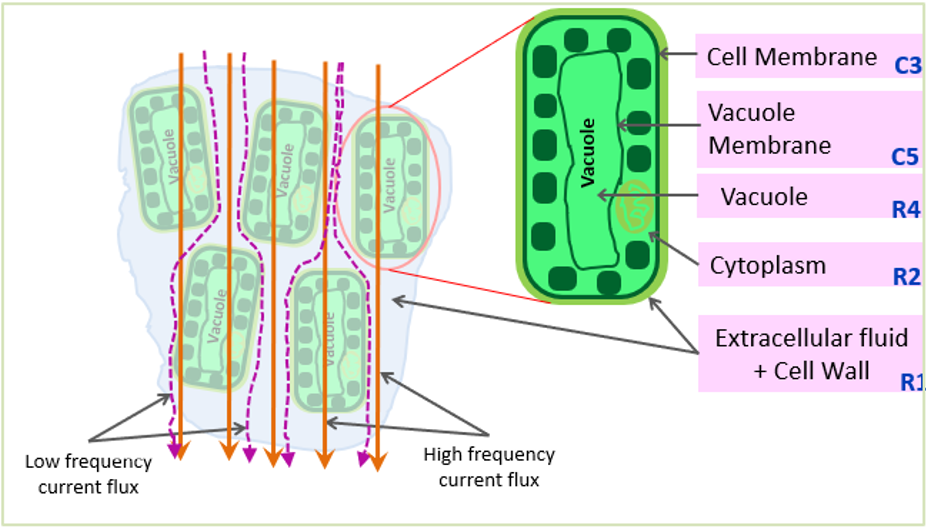
Bioelectrical Impedance Spectroscopy (BIS) Monitoring of Lettuce during 19 Hours
Joseph Christian Nouaze, Philippe Lyonel Touko,
Guoxu Liu
, Jae Hyung Kim, and Jae Ho Kim
International Symposium on Sensor Science (
I3S
), May, 2021
2020
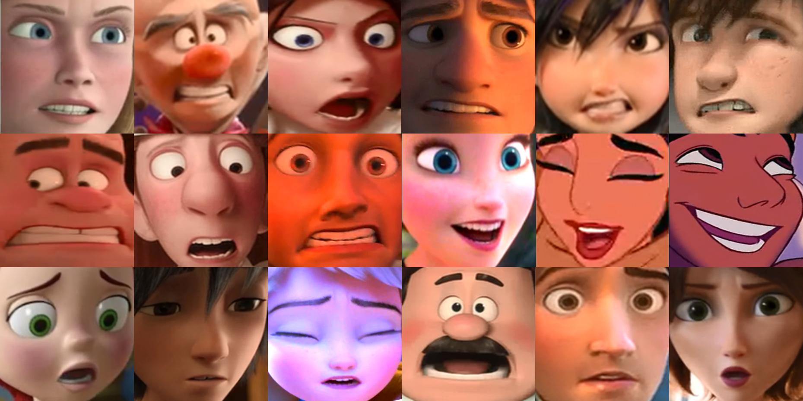
Facial Expression Recognition of Animated Human Characters
Guoxu Liu
, Hui Jin, Hailong Jiang, and Jae Ho Kim
International Conference on Machine Learning and Computing (
ICMLC
)
, June, 2020
2019
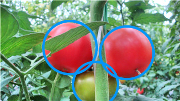
A Robust Mature Tomato Detection in Greenhouse Scenes Using Machine Learning and Color Analysis
Guoxu Liu
, Shuyi Mao, Hui Jin, and Jae Ho Kim
International Conference on Machine Learning and Computing (
ICMLC
)
, February, 2019
2017
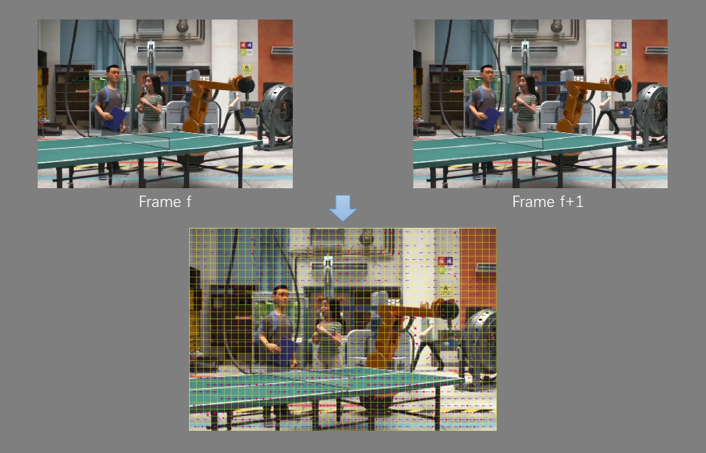
A Various Camera Motion Type Estimation of Animation Sequences
Hailong Jiang,
Guoxu Liu
, and Jae Ho Kim
Conference of Korea Multimedia Society (
KMMS
), November, 2017
Poster
2023
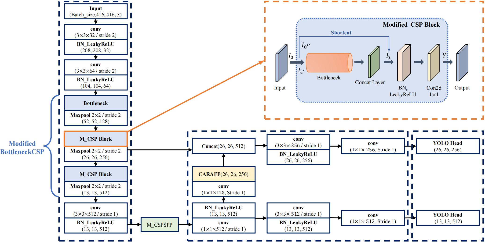
An Efficient Tomato Detection Method based on Improved YOLOv4-tiny Model in Complex Environment
Philippe Lyonel Touko Mbouembe,
Guoxu Liu
, Jordane Sikati, Suk Chan Kim and Jae Ho Kim
Frontiers in Plant Science, 2023
PDF
2022
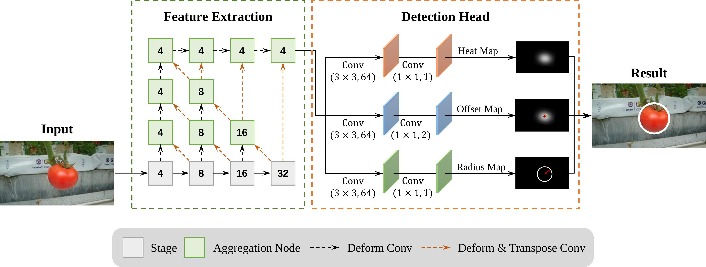
TomatoDet: Anchor-free Detector for Tomato Detection
Guoxu Liu
, Zengtian Hou, Hongtao Liu, Jun Liu, Wenjie Zhao and Kun Li
Frontiers in Plant Science, 2022
PDF
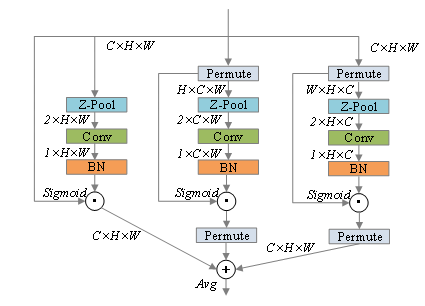
Tomato pests recognition algorithm based on improved YOLOv4
Jun Liu, Xuewei Wang, Wenqing Miao,
Guoxu Liu
Frontiers in Plant Science, 2022
PDF
2021
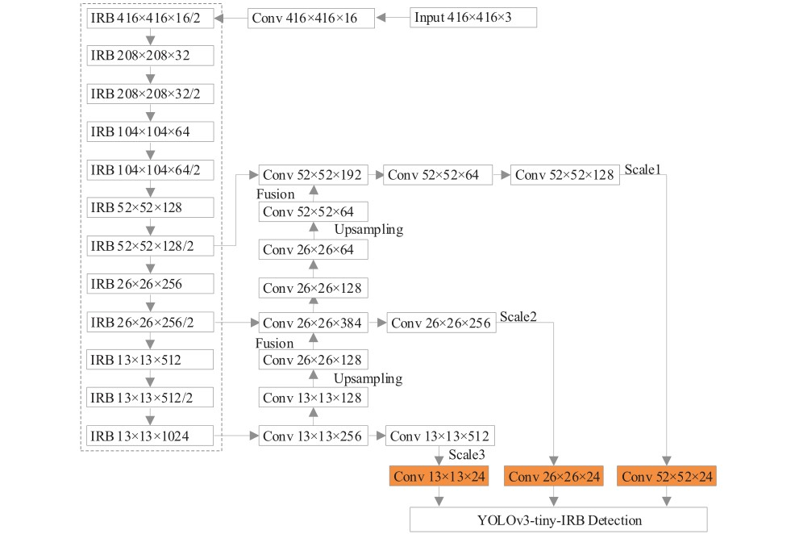
Diseases Detection of Occlusion and Overlapping Tomato Leaves Based on Deep Learning
Xuewei Wang, Jun Liu,
Guoxu Liu
Frontiers in Plant Science, 2021
PDF
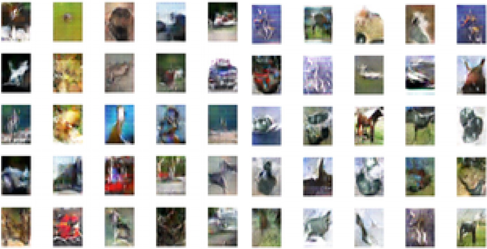
Enhanced Generative Adversarial Networks with Restart Learning Rate in Discriminator
Kun Li
, Dae-Ki Kang
Applied Sciences, 12(3), 2021
PDF
2020
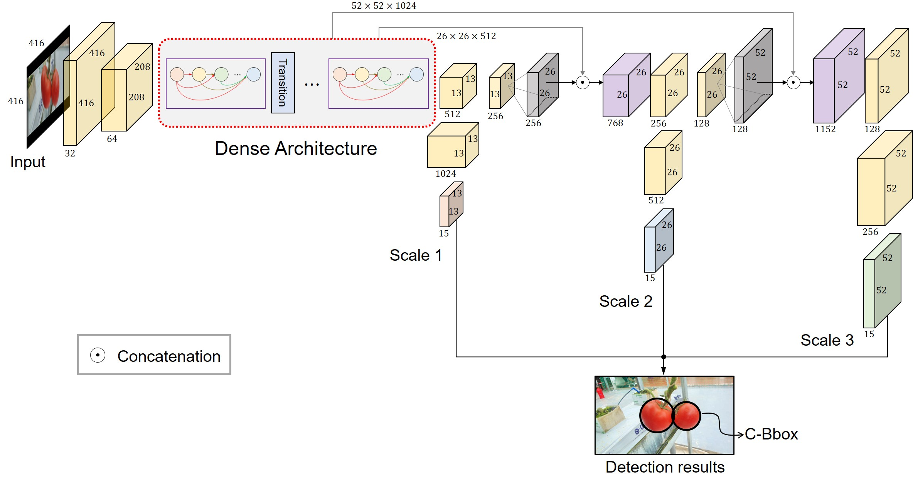
YOLO-Tomato: A Robust Algorithm for Tomato Detection based on YOLOv3
Guoxu Liu
, Joseph Christian Nouaze, Philippe Lyonel Touko, and Jae Ho Kim
Sensors, 20(7), 2020
Webpage
2019
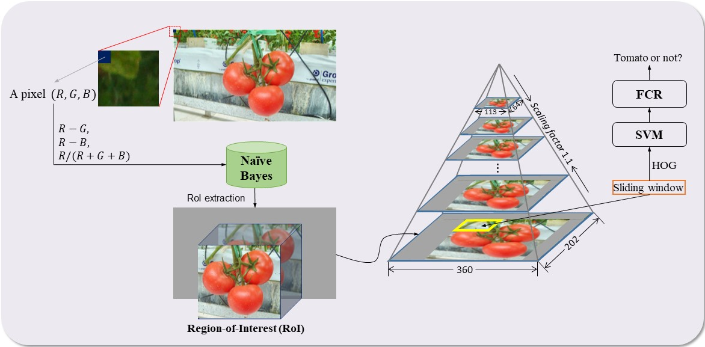
A Mature-Tomato Detection Algorithm Using Machine Learning and Color Analysis
Guoxu Liu
, Shuyi Mao, and Jae Ho Kim
Sensors, 19(9), 2019
Webpage